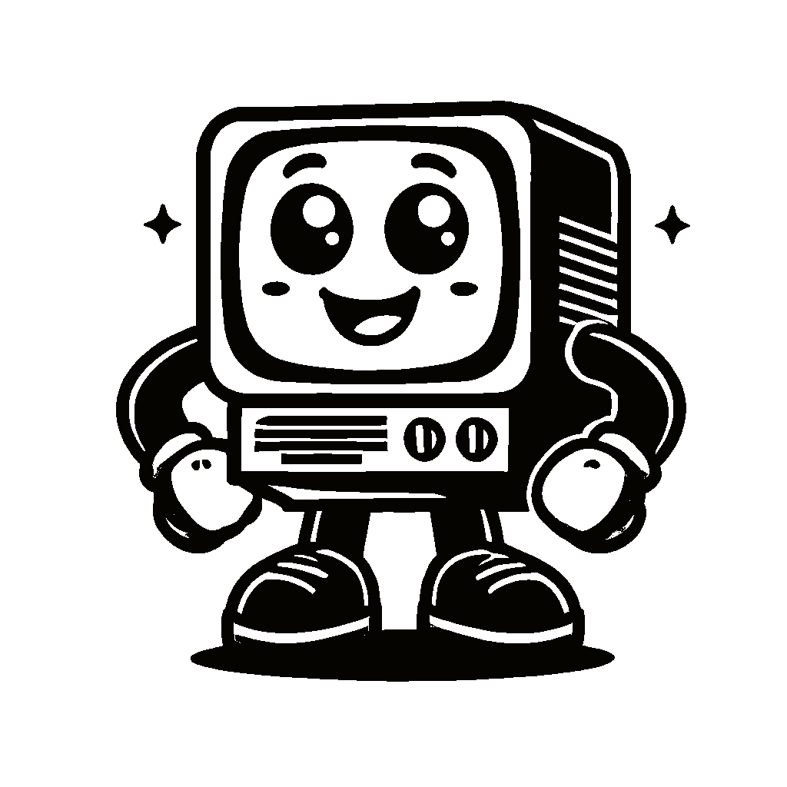

Projects
- Project 01
- Project 02
- Project 03
Please use the tabs to navigate through the projects. Each tab provides specific details about a different project. Ensure you click on a tab to view the corresponding information.
Checkout My Other Projects
- All
- Development
- UX Design
- Graphic Design
- Photography
Foodie Mobile Application
UX Case Study
BravePets Responsive Web Application
UX Case Study
Unprotected Victims Web Application
Software Development | UX Research
Deli Potential Mobile Application
UX Case Study (In Development)
Fitbox Mobile Application
UX Case Study (In Development)
nextravel Mobile Application
UX Case Study (In Development)
Homeara Web Application
UX Design

Voygr Mobile Application
UX Design | UX Research
BondX Mobile Application
UX Design | UX Research
Lets Get in Touch
Let's build something great together—get in touch for your next web project!
